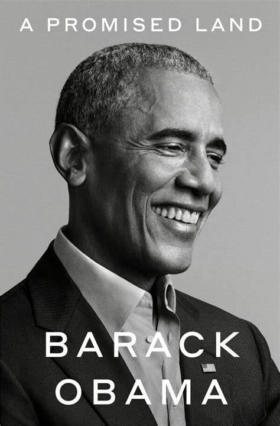
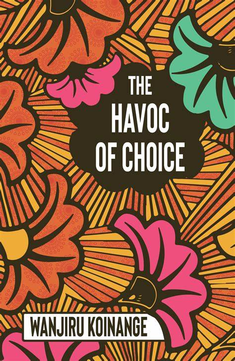
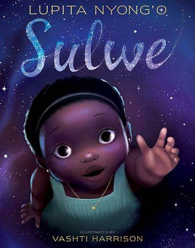

1. "A Promised Land" by Barack Obama: This memoir, covering his time in office and hopes for America, has been a global best-seller. It sold 887,000 copies in the United States and Canada on its first day, breaking a record previously held by his wife Michelle Obama for "Becoming"
2."The Havoc of Choice" by Wanjiru Koinange: Koinange's debut novel explores corruption, politics, and violence through a Kenyan lens, set against the backdrop of the 2007/08 Post-Election Violence (PEV) in Kenya
3."Sulwe" by Lupita Nyong'o: This critically acclaimed children's book tells the story of a young, dark-skinned girl who wants to be considered beautiful. A fantasy-like journey through the night sky changes everything, and the book earned plaudits for tackling issues of colorism and empowering young African girls
